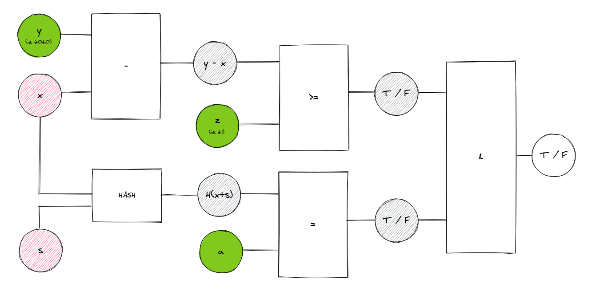
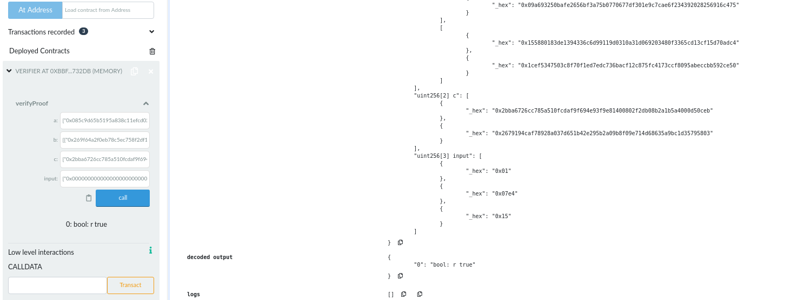

Introduction To
Zero Knowledge Proofs
aka ZKPby Raymond Yeh
What are
Zero Knowledge Proofs
I'm going to proof to you that I know something, without telling you what is it!
Let's play a game...

Now seriously...

Proof to me a solution exists
I cut a huge stencil...
...and place it over the puzzle

You are convinced that I know the solution, without knowing the solution itself.
Applications of ZKP
Age Restrictions
Proof that you are over the an age limit without revealing your actual age.
Anonymous Verifiable Voting
Proof that one has the rights to cast a vote, the vote has been included, and the vote tally is correct. All without revealing identity of voters.
KYC (Whitelist)
Proof that an entity belongs to a set of valid values, while preserving the entity's privacy
KYC (Blacklist)
Proof that an entity does not belong to a set of blacklisted entities.
Board Membership
Construction of ring signatures where one can verify that the message comes from the group without revealing who the person is.
Accountancy
Proof that the computation of the balance sheet is correct without showing all items on the sheets.
Common Reporting Standards (CRS)
Proof that a financial document passes validation such as enumeration or integer ranges.
Solvency
Proof that a financial institute has sufficient reserves to settle at least x% of accounts.
And More...
https://arxiv.org/pdf/1907.06381.pdfLay of the Land
Where Do We Come From? What Are We? Where Are We Going?State of ZKP
 High-Level languages for zkSNARKs, Fully-Homomorphic-Encryption
and Multi-Party-Computation
High-Level languages for zkSNARKs, Fully-Homomorphic-Encryption
and Multi-Party-Computation
ZK-SNARKS
Zero-Knowledge Succinct Non-Interactive Argument of KnowledgeSuccinct
- Proofs verified within a few milliseconds
- Proof length of only a few hundred bytes
Non-Interactive
Proof consists of a single message sent from prover to verifierConstruction
Writing ZKP Application
Choose your language

Blue Pill - Zokrates
- High level ZKP library
- Lower learning curve
- Tutorial sucks less
- Deployed on Ethereum
Red Pill - Zircom
- Low level ZKP library
- High learning curve
- Tutorial sucks
- ZKP ≠ blockchain
- Test in JS
- JS library for web app
What Are We Building?
Construct a government-issued document that allow the citizen to prove that he is above a certain age without revealing the age.
Approach
I know of a number, x, that is greater than 21.
But I won't tell you what x is.Simple Comparison Circuit
I know of a number, x, such that y-x >= z. Where y is the current year and z is the age restriction.
But I won't tell you what x is. You may see y and z though.Generic Comparison Circuit
I know of a number, x, such that f(x) = a. Where a has been attested by the government to be a valid evidence about my age.
But I won't tell you what x is. You can verify a though.With Public Commitment
Final Circuit
(with rainbow table attack protection) Zokrates
Zokrates
Installation
curl -LSfs get.zokrat.es | sh
Age Check Circuit
Age Check Circuit
ageCheck.zok
def main(private field birthYear, field comparisonYear, field minimumDifference) -> (field):
field result = if comparisonYear - birthYear >= minimumDifference then 1 else 0 fi
return result
Running the circuit
zokrates compile -i ageCheck.zok
zokrates setup
zokrates compute-witness -a 1990 2020 21
zokrates generate-proof
zokrates export-verifier
Deploy Verification Contract
Verify Proof
Pay Attention to the Inputs
Birth Year Check Circuit
Birth Year Check Circuit
birthYearCheck.zok
import "hashes/sha256/512bitPacked" as sha256packed
def main(private field birthYear, private field rand1, private field rand2, field hash1, field hash2) -> (field):
h = sha256packed([0, birthYear, rand1, rand2])
h[0] == hash1
h[1] == hash2
return 1
Running the circuit
zokrates compile -i birthYearCheck.zok
zokrates setup
zokrates compute-witness -a 1990 123 123 233770742581153321658241226707865859106 161843013006795803511295431198461913882
zokrates generate-proof
zokrates export-verifier
Complete Circuit
Complete Circuit
complete.zok
import "hashes/sha256/512bitPacked" as sha256packed
def birthYearCheck(private field birthYear, private field rand1, private field rand2, field hash1, field hash2) -> (field):
h = sha256packed([0, birthYear, rand1, rand2])
h[0] == hash1
h[1] == hash2
return 1
def ageCheck(private field birthYear, field comparisonYear, field minimumDifference) -> (field):
field result = if comparisonYear - birthYear >= minimumDifference then 1 else 0 fi
return result
def main(private field birthYear, private field rand1, private field rand2, field hash1, field hash2, field comparisonYear, field minimumDifference) -> (field):
birthYearTest = birthYearCheck(birthYear, rand1, rand2, hash1, hash2)
birthYearTest == 1
ageTest = ageCheck(birthYear, comparisonYear, minimumDifference)
ageTest == 1
return 1
Running the circuit
zokrates compile -i complete.zok
zokrates setup
zokrates compute-witness -a 1990 123 123 233770742581153321658241226707865859106 161843013006795803511295431198461913882 2020 21
zokrates generate-proof
zokrates export-verifier
Verify Proof
(note the inputs and proof length)Circom
Circom
Installation
npm install -g circom
npm install -g snarkjs
Age Check Circuit
Age Check Circuit
ageCheck.circom
template AgeCheck() {
signal private input birthYear;
signal input comparisonYear;
signal input minimumDifference;
signal output results;
results <-- (comparisonYear - birthYear - minimumDifference)>=0 ? 1 : 0;
}
component main = AgeCheck();
Circuit Inputs
input.json
{
"birthYear": 1990,
"comparisonYear": 2020,
"minimumDifference": 21
}
Running the circuit
circom ageCheck.circom --r1cs --wasm --sym
snarkjs info -r ageCheck.r1cs
snarkjs setup -r ageCheck.r1cs
snarkjs calculatewitness --wasm ageCheck.wasm --input input.json --witness witness.json
snarkjs proof --witness witness.json --proof proof.json
snarkjs verify --proof proof.json
snarkjs generateverifier
snarkjs generatecall
Verify Proof
Birth Year Circuit
Pedersen Hash Component
pedersenHash.circom
include "../node_modules/circomlib/circuits/pedersen.circom";
include "../node_modules/circomlib/circuits/bitify.circom";
template PedersenHash() {
signal private input message[2];
signal output out[2];
component pedersen = Pedersen(256);
component inputBits[2] = Num2Bits(128);
inputBits[0].in <== message[0];
inputBits[1].in <== message[1];
for(var i=0; i<128; i++){
pedersen.in[i] <== inputBits[0].out[i];
pedersen.in[i+128] <== inputBits[1].out[i];
}
out[0] <== pedersen.out[0];
out[1] <== pedersen.out[1];
}
component main = PedersenHash();
Circuit Inputs
input.json
{
"message": [
1990,
1990
]
}
Complete Circuit
Complete Circuit
complete.circom
include "../node_modules/circomlib/circuits/pedersen.circom";
include "../node_modules/circomlib/circuits/bitify.circom";
template AgeCheck() {
signal private input birthYear;
signal input comparisonYear;
signal input minimumDifference;
signal output results;
results <-- (comparisonYear - birthYear - minimumDifference)>=0 ? 1 : 0;
}
template PedersenHash() {
signal private input message[2];
signal output out[2];
component pedersen = Pedersen(256);
component inputBits[2] = Num2Bits(128);
inputBits[0].in <== message[0];
inputBits[1].in <== message[1];
for(var i=0; i<128; i++){
pedersen.in[i] <== inputBits[0].out[i];
pedersen.in[i+128] <== inputBits[1].out[i];
}
out[0] <== pedersen.out[0];
out[1] <== pedersen.out[1];
}
template Complete() {
signal private input birthYear;
signal private input rand;
signal input hash[2];
signal input comparisonYear;
signal input minimumDifference;
signal output results;
signal computedHash[2];
signal comparisons[2];
component pedersen = PedersenHash();
component ageCheck = AgeCheck();
pedersen.message[0] <== birthYear;
pedersen.message[1] <== rand;
computedHash[0] <== pedersen.out[0];
computedHash[1] <== pedersen.out[1];
comparisons[0] <-- computedHash[0]==hash[0];
comparisons[1] <-- computedHash[1]==hash[1];
ageCheck.birthYear <== birthYear;
ageCheck.comparisonYear <== comparisonYear;
ageCheck.minimumDifference <== minimumDifference;
results <-- comparisons[0] * comparisons[0] * ageCheck.results;
}
component main = Complete();
Circuit Inputs
input.json
{
"birthYear": 1990,
"rand": 1990,
"hash": [
"20687928115026053699926515049138692070100647654038300385721779911896219193902",
"11072087695851230221153980887306278529192602579917930578016623940159289561376"
],
"comparisonYear": 2020,
"minimumDifference": 21
}
Running the circuit
circom complete.circom --r1cs --wasm --sym
snarkjs info -r complete.r1cs
snarkjs setup -r complete.r1cs
snarkjs calculatewitness --wasm complete.wasm --input input.json --witness witness.json
snarkjs proof --witness witness.json --proof proof.json
snarkjs verify --proof proof.json
snarkjs generateverifier
snarkjs generatecall
Testing
Verify on Web App
Ending Notes
- ZKP = Proof of knowledge
- Constraints are your building block
- ZKP ≠ Blockchain
- ZKP ≠ Panacea
- You may not have one ZKP in blue
End
- https://github.com/yehjxraymond/circom-experiment
- https://github.com/yehjxraymond/zokrates-experiment